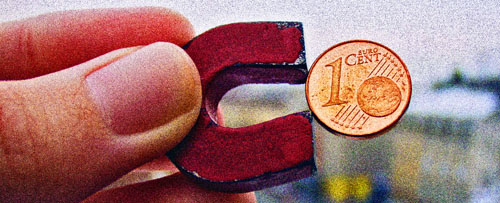

Der Schweinezyklus des Kleingelds

Die Entwicklung des Kleingeldbestandes in durchschnittlichen Portemonnaies gleicht einem Schweinezyklus: Anfangs hat man wenig Kleingeld, bezahlt mit großem Geld und kriegt kleines Wechselgeld rein.
Im Zuge dessen füllt sich die Brieftasche mit lästigem Kupfergeld, bis man genervt beginnt sich die Zeit an der Kasse zu nehmen um passend zu zahlen. Nach einiger Zeit ist man das Kleingeld auf diese Weise losgeworden und der Zyklus beginnt von vorn.
Das kann man als gegeben hinehmen, oder man tut etwas dagegen. Denkbare Strategien wären:
- Jeden Abend das gesamte Kleingeld aus dem Portemonnaie nehmen und in ein dekoratives Glasgefäß auf dem Schreibtisch transferieren. Dort spielt es Blickfang, bis der Inhalt am Jahresende in den Puff getragen/einem wohltätigen Zweck gespendet wird.
- Immer passend bezahlen. Sollte das Kleingeld dafür einmal nicht ausreichen, einfach die Leute hinter einem in der Kassenschlange um ein paar Cents anschnorren.
- Nach Finnland, Belgien oder in die Niederlande auswandern.
Wer seine Geldbörse in der Arschtasche aufbewahrt und viel im Sitzen arbeitet, weiß wie wertvoll wirksame Strategien zur Durchbrechung des kleingeldbezogenen Schweinezyklus' sind.
Bild: 1 Euro Cent von Mario's Planet unter CC-Lizenz


9 Kommentare zu "Der Schweinezyklus des Kleingelds"
- Externe Links im selben Fenster öffnen
- Externe Links in neuem Fenster öffnen
Daniel
Ich bevorzuge die erste Lösung, auch wenn mein Gefäß weder aus Glas noch besonders Dekorativ ist.
Herschel Rubinstein
hauptsache der gute zweck am ende des jahres stimmt
westernorld
1 und 2cent stücke gehören einfach abgeschafft, ich nenne es immer das unnötige kleingeld.
aber wenigstens geht es uns besser als den briten deren währung zurecht pfund heißt.
jasper.
ich gehe auch der ersten methode nach. ein rotes schnödes plaste sparschwein, das schon zu 2/3 gefüllt ist.
Rick
Zwei Lösungsansätze: a) man steigt um auf Schwundgeld/Regiogeld/Freigeld. Nachzulesen auch in jedem Kunstrasenthread, die Freigeldesoteriker spammen in jedem Forum.
b) man wird guter Kopfrechner. Ich bin in Unterneuntupfing Feind jeder Kassiererin, dafür habe ich niemals mehr Kleingeld als nötig. Großgeld allerdings leider auch nicht, aber das ist eine andere Geschichte...
nils
ey emu! nich kränkeln. mitkommen.
daki
Ich erlebe den Schweinezyklus zwar auch immer wieder, trage mein Portemonnaie jedoch nicht in der Arschtasche. Sieht in der Jackenbrusttasche aber auch komisch aus, wenn man zu viel Klein/Großgeld hat. Aber sitzt eben senkrecht, was das Kleigeld am Austreten über das seitliche Loch hindert.
OInk!
Mein Vorschlag: Bei vielen Kassen stehen direkt hinter dem Einpackdings Spendensammelbehälter für die Kindernothilfe o. Ä...und überhaupt, ihr müsst es ja haben, "unnötiges Kleingeld"...:pffff
Herschel Rubinstein
@westernworld: auf jeden fall. ich weiß auch nicht, was mich davon abhält das gesammelte kleingeld einzuschmelzen und den kupferklumpen zu verhökern.
@jasper: vorbildlich. sag bescheid, wenn schlachtfest ist
@rick: "guter kopfrechner" zu werden scheidet aus - wi war das nochmal mit dem freigeld?
@nils: netter versuch
@daki: mal was anderes. aber zieht das die jacke nicht einseitig runter und sorgt somit für einen schlechten sitz der selbigen?
@OInk: gegen geld hat hier keiner was. die art, wie es daher kommt, ist entscheident das mit dem sammelbehälter ist aber nicht schlecht, so spart man sich das glasgefäß zu hause.
das mit dem sammelbehälter ist aber nicht schlecht, so spart man sich das glasgefäß zu hause.
im übrigen wäre diese spendensammelmethode wohl der große verlierer einer kupfergeldabschaffung. inwiefern das ins gewicht fällt bleibt allerdings herauszufinden.